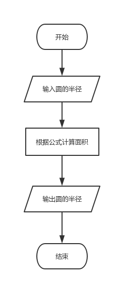

流程控制¶
流程控制的几大类：
- 顺序结构
- 选择结构
- 循环结构
顺序程序设计¶
顺序结构是一种最为简单的结构，如以下示例：
输入圆的半径，计算并输出圆的面积
流程： 输入半径 --> 计算面积 --> 输出
传统的流程图表示方法

c代码为：
#include <stdio.h>
#define PI 3.14
int main(void)
{
float s = 0; // 圆的面积
int r = 0; // 半径
printf("请输入圆的半径:");
scanf("%d", &r);
s = PI * r * r;
printf("圆的面积为：%lf", s);
return 0;
}
选择结构程序设计¶
if else语句¶
#include <stdio.h>
int main(void)
{
int i = 0;
printf("请输入一个整数: ");
scanf("%d", &i);
if(i < 10) {
printf("I小于10");
} else if(i < 20) {
printf("I小于20");
} else {
printf("I大于20");
}
return 0;
}
#include <stdio.h>
int main(void)
{
int i = 0;
printf("请输入一个整数: ");
scanf("%d", &i);
if(i < 10)
; // 空语句
else if(i < 15); // 空语句
else if(i < 20)
printf("小于20");
else if(i < 30)
{
if (i==25)
printf("等于25");
else
printf("小于30");
}
else
printf("大于30");
return 0;
}
switch语句¶
#include <stdio.h>
int main(void)
{
// 根据用户输入的月份来输出月份对应的天数
int month;
printf("请输入月份，我来判断天数");
scanf("%d",&month);
switch(month)
{
case 1:
printf("一月有31天");
break;
case 2:
printf("二月有28/天");
break;
case 3:
printf("三月有31/天");
break; // 如果没有break语句，后面的case都为真；
case 4:
printf("四月有30/天");
break;
default:
printf("当前程序暂时只能判断1-4月的情况!\n");
break;
}
return 0;
}
注意点
case后面各个常量或变量表达式的值必须各不相同，类型一般为整型；case后面要加break，否则程序会继续往下执行；default分支一般用于错误处理，不要作为其中一个处理分之；
循环结构程序设计¶
while¶
- 基本语法
whilt(循环条件){
循环操作语句
}
- 使用循环计算1-100的累加和
# include <stdio.h>
int main(void)
{
int i = 0;
int sum = 0;
while(i<101)
{
sum+=i;
i++;
}
printf("结果是: %d",sum);
return 0;
}
- 循环输出数组中的值
#include <stdio.h>
int main(void)
{
int a[10] = {1,2,3,4,5,6,7,8,9,10};
int i = 0;
while(i<10){
printf("%d\n",a[i]);
i++;
}
return 0;
}
do...while¶
- 基本语法
do {
循环操作
}while(循环条件);
-
特点：先执行，再判断
-
先执行一遍循环操作；
- 符合条件，循环继续执行；
-
否则循环推出；
-
使用do-while结构打印菜单
只能选择1-3之间的数字
# include <stdio.h>
void main()
{
int choice;
// 打印游戏菜单
printf("性格测试：\n");
printf("如果你是一位君王，对于身边的伴侣您希望？\n");
printf("1. 只要有一位真爱的妻子\n");
printf("2. 可以两位以上的爱人\n");
printf("3. 拥有三千佳丽\n");
do{ // 如果输入错入，将一直循环输入
printf("请选择：");
scanf("%d",&choice);
if(!(choice>=1 && choice<=3)){
printf("只能输入1-3之间的数字，请重新输入！\n");
}
}while(!(choice>=1 && choice<=3)); //执行循环
// 如果执行到这里，证明用户的输入是正确的，在1-3之间
switch(choice)
{
case 1:
printf("你选择了生命中的唯一，然而老旧军早已看穿了一切\n");
break;
case 2:
printf("你个花心大萝卜\n");
break;
case 3:
printf("呵呵呵呵，10元/包，江浙沪包邮\n");
break;
}
}
- 将一个数字进行反转
# include <stdio.h>
void main()
{
int num = 1234;
printf("个位：%d\n",num % 10);
printf("十位：%d\n",num / 10 %10);
printf("百位：%d\n",num / 100 %10);
printf("千位：%d\n",num / 1000 %10);
// 规律：除10再模10
int temp; // 临时变量
while(num>0){
printf("%d\n",num%10);
num /= 10; // 取出个位数字后，立即去掉个位数字
}
}
- 使用不同的循环结构实现数字反转
方式1
#include <stdio.h>
void main() {
int value, right_num;
do {
printf("\n请输入一个数：");
scanf("%d", &value);
if (value <= 0) {
printf("必须是正数！");
}
} while (value <= 0);
printf("\n反转后的数为：");
do {
right_num = value % 10;
printf("%d", right_num);
value = value / 10;
} while (value != 0);
printf("\n");
}
方式2
#include <stdio.h>
void main() {
int value, right_num;
value = 0;
while (value <= 0) {
printf("\n请输入一个数：");
scanf("%d", &value);
if (value <= 0) {
printf("该数字必须是正数");
}
printf("\n反转后的数为：");
}
while (value != 0) {
right_num = value % 10;
printf("%d", right_num);
value = value / 10;
}
printf("\n");
}
for¶
- 语法
for(表达式1;表达式2;表达式3){
语句;
}
- 表达式1：通常是为循环变量赋初始值，可省略，例如：i=0
- 表达式2：循环条件，是否继续执行循环，可省略，例如：i>10
- 表达式3：更新循环变量的值，可省略，例如：i++
- 分号：用来分割三个表达式，不可省略，
for(;;)是死循环
#include <stdio.h>
void main() {
const int N = 20; // 定义一个常量，该常量只能读取不能被修改，且名称必须为大写
int i;
for (i = 0; i < N; i++) { // 输出之后再执行i++
printf("%d\t", i);
}
}
- 循环输入6个月的工资数，计算半年内的平均工资
#include <stdio.h>
void main() {
const int MONTH_COUNT = 6; // 月数
int i;
double salary; // 工资
double salary_total = 0; // 6个月的总工资
double salary_avg; // 6个月的平均工资
for (i = 1; i <= MONTH_COUNT; i++) {
printf("请输入你第%d个月的工资：", i);
scanf("%lf", &salary); // 接收当前月的工资
salary_total += salary; // 工资累加
}
salary_avg = salary_total / MONTH_COUNT;
printf("半年内的平均工资是: %.2lf", salary_avg);
}
- 打印简易加法表
#include <stdio.h>
void main() {
int num;
printf("请输入一个数字： ");
scanf("%d", &num);
for (int i = 0; i < num; ++i) {
printf("%d + %d = %d", i, (num - i), num);
if (!(i % 2)) {
printf("\t");
} else {
printf("\n");
}
}
}
break和continue¶
- break语句的作用
跳出循环，只针对switch和循环(while,for)结构，执行循环之后的语句;
- 循环输入玩家的年龄，如果年龄为负则停止输入，提示输入错误。
一旦输入的值为负，使用break跳出循环
#include <stdio.h>
void main() {
int age;
for (;;) {
printf("请输入你的年龄：");
scanf("%d", &age);
if (age < 0) {
printf("输出错误！");
break;
}
}
}
- 猜商品价格，5次内猜对有奖励
#include <stdio.h>
#include <time.h>
#include <stdlib.h>
void main() {
int price; // 要用户猜的商品价格
srand((unsigned) time(NULL)); // unsigned无符号
price = rand() % 10000; // 获取四个整型
printf("%d\n", price);
int guessPrice; // 用户猜测的商品价格
int count = 0; // 用户记录猜的次数
for (;;) {
++count;
printf("请输入你猜测的价格：");
scanf("%d", &guessPrice);
if (guessPrice > price) {
printf("猜大了！\n");
} else if (guessPrice < price) {
printf("猜小了！\n");
} else {
printf("猜测成功！\n");
if (count <= 5) {
printf("猜测次数小于5次，有奖励！");
}
break;
}
}
printf("你一共猜了%d\n", count);
}
- 循环录入用户性别，只能使用字符m/M(男)或f/F(女)，一单输入错误，结束录入，要求统计录入正确的次数
#include <stdio.h>
void main() {
int count = 0; // 计算录入正确的次数
char sex; // 定义性别字符
while (1) {
printf("请输入性别字符： ");
scanf("%c", &sex);
fflush(stdin); // 记得清空缓冲区，避免错误
if (sex != 'm' && sex != 'M' && sex != 'f' && sex != 'F') {
break;
}
count++;
}
printf("一共录入次数为：%d", count);
}
- continue语句
跳过本次循环，继续下一次循环
如果for循环遇到continue语句，下一步回跳到更新循环变量，然后在进入下一次循环
- 循环输入5个玩家的年龄，统计年龄为负数的录入次数
如果录入正确则跳过，输入错误则计数器加1
#include <stdio.h>
void main() {
int age = 0; // 计算录入正确的次数
int count = 0; // 计数器
for (int i = 0; i < 5; ++i) {
printf("请输入玩家年龄： ");
scanf("%d", &age);
if (age >= 0) { // 正确
continue;
}
count++;
}
printf("错误的年龄次数为：%d次\n", count);
}
- 求1-100之间的偶数和
#include <stdio.h>
void main() {
int num = 0; // 总和
for (int i = 0; i <= 100; i += 2) {
num += i;
}
printf("总和是： %d", num);
}
- 嵌套循环之打印星号图形
用*输出一个葵形图形
#include <stdio.h>
void main() {
for (int i = 0; i < 4; i++) { // 外层循环控制行数和换行
for (int k = 0; k <= 2 - i; ++k) {
printf(" ");
}
for (int j = 0; j <= i * 2; j++) { // 内层循环控制列数和列符号
// 挖空的原理：判断什么时候打印星号，什么时候打印空格
printf("*"); // 列符号
}
printf("\n"); // 换行
}
}